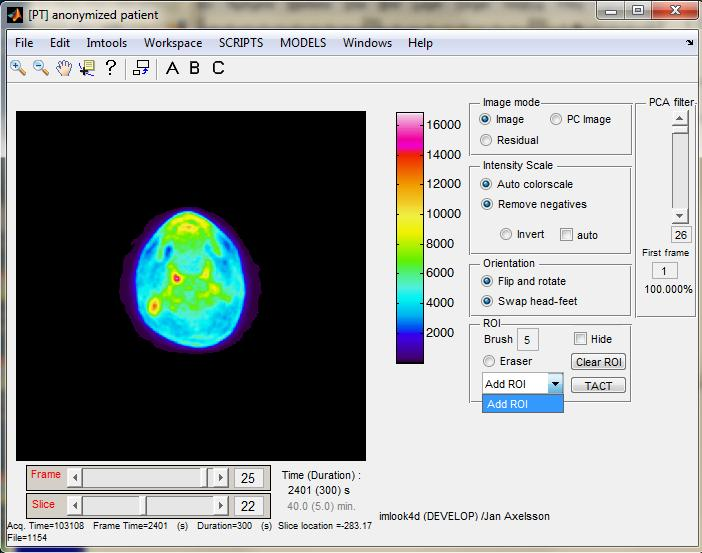
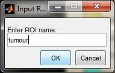
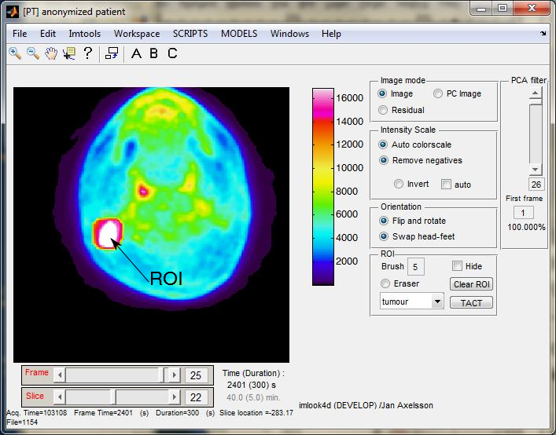
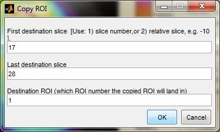
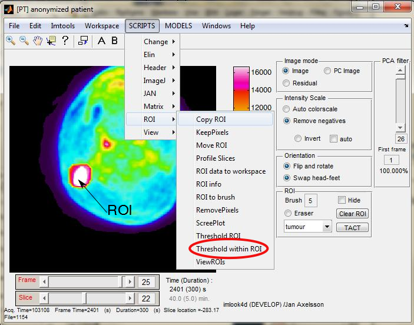
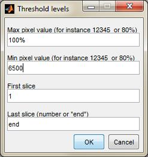
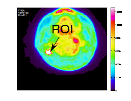
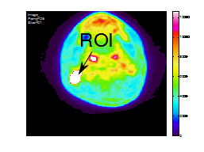
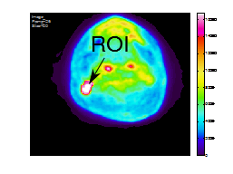

Jan Axelsson 2013-MAR-11
In the vocabulary of imlook4d, there is no difference at all between a region-of-interest (ROI) and a volume-of-interest (VOI). Therefore, everything is called a ROI.
A region-of-interest (ROI) can be delineated using the script “Threshold ROI”. This script will threshold everything in a defined volume, which could be a problem if for instance a tumour is in slices with other high uptake.
The solution is to manually create a rough ROI (in multiple slices) and refine that by the tresholding algorithm in the script “Threshold within ROI”. This way the rough ROI
Consider the image below, where a tumour and blood uptake is competing.
We first create a ROI by selecting “Add ROI”:

and give it the name “tumour”

We now make a rough ROI with the cursor brush, defining the region within which we want to apply a thresholding algorithm. It is good practice to make the rough ROI bigger than the actually tumour. Also use the rough ROI to avoid regions that should not be included.

Here we have also utilized the zoom button to make the
drawing easier
(press
,
click cursor in middle of the image, press
to finish).
Running the “Copy ROI” script:

copies the currently selected ROI definition to slices 17 to 28(this saves some painting). The Destination ROI was set to 1, which was the currently selected ROI.
The same pixels in all slices 17 to 28 are now part of ROI 1 (the ROI we called “tumour”).
Inspect that the ROI is covering the tumour and nothing else by going through the slices.
TRICK: a nice trick is to click the Hide check-box off/on to better see the ROI.
Modify if necessary by painting or erasing using the cursor as a brush.
TRICK: The eraser radio-button enables an eraser brush. Don't forget to turn it off before painting again.
We will now threshold inside the created ROI. This causes the ROI to shrink so that only pixels with values within a specified intensity range will remain in the ROI.


In this example, we have seen that the ROI intensity is 13500 (Bq/ml), and we select the 50% threshold level which equals 6500. The highest pixel level is 100% of the pixel within this frame, so we will threshold between 6500 and maximum pixel. The slice range should be kept at the default value 1 to end.
Below are some examples of these thresholded ROIs:

and the images with hidden ROI ( Hide check-box on), scaled as above